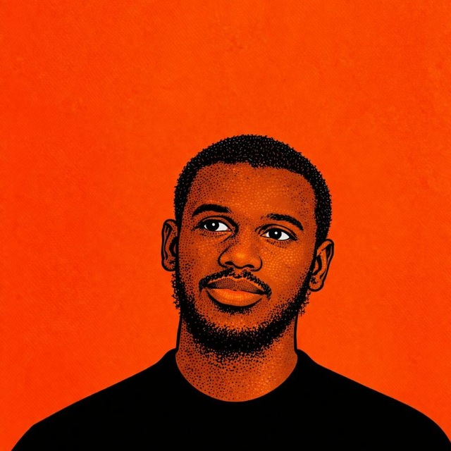

Fahmi Aliyi
Software EngineerSoftware developer specializing in backend architecture, web applications, and mobile systems. Deeply focused on clean code, resilient multi-tenant infrastructure, and refined interface design.

Software developer specializing in backend architecture, web applications, and mobile systems. Deeply focused on clean code, resilient multi-tenant infrastructure, and refined interface design.